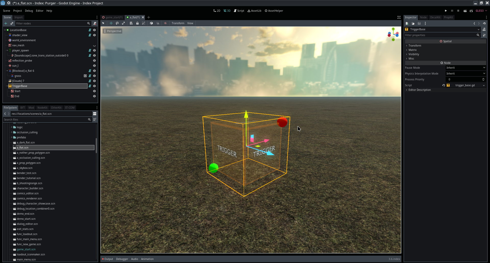

Module: trigger_base
Documentation last edited: October 23, 2025 at 14:33 UTC
Description

It's some kind of cool base for triggers, you know, hence why it is called "trigger_base". Cubes. You just... tweak them. They cover the space. They give you possibility to set up triggers. Control. Easier to code. Fancier looks. Sense of agency. It was one of the first things made in this project. It looked cool as shit. It turned out to be barely usable though. But damn, how cool it was.
TriggerBase
is like a decent base class for in-editor triggers that simplify visual initialization and just provides basic methods to check entering/exiting bodies. That's... really it.
Usage example
tool
class_name KickassTrigger
extends TriggerBase
# Your personal body count :)
var bodies =
[]
# Ensures the trigger has the correct material assigned
func verify_material():
if trigger_material == null:
trigger_material = \
load("res://modules/damagable/materials/damage_trigger_material.tres")
# Called when a body enters the trigger area
func trigger_on_body_enter(body):
if body is StaticBody:
return # Ignore static bodies
if body is KinematicBody:
# Kinematic bodies (typically characters) are added to tracking list
bodies.append(body)
if body is RigidBody:
# Rigid bodies are also added (could be physics objects)
bodies.append(body)
# Called when a body exits the trigger area
func trigger_on_body_exit(body):
if body is StaticBody:
return # Ignore static bodies
bodies.erase(body) # Remove from tracking list
Look, I know you're not reading this. Nobody reads docs. But if you are reading this, congratulations - you're now legally obligated to use this class properly. Not sure why would you need it, but you can be proud about it.
General Information
Root directories list
docs, icons, materials, src
Nodes
Classes
None
Resources
None
Other Scripts
None